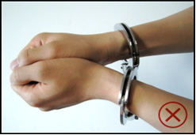

杭州市公安机关处置醉酒警情标准操作程序
为了规范公安机关处置醉酒警情，防止醉酒人员受伤、危害他人人身和财产安全、危害公共安全，防止醉酒人员在醒酒期间出现意外，保障民警执法安全，根据有关法律、法规，制定本操作程序。
一、一般处置要求
(一)接到涉及醉酒人员的警情时，问明醉酒人员的人数、状态、是否持有凶器及何种凶器、是否有肇事肇祸行为、是否有人员受伤等情况。
若有人员受伤的，即通知120急救中心。
(二)派出所接到指令后，迅速赶赴现场。到达现场后，制止肇事肇祸行为，控制住现场局势。
(三)查看醉酒人员身体状况，但要注意自我防护，时刻警惕醉酒人可能撒酒疯甚至伤人。如醉酒人有外伤应及时拍照固定，在《110处警现场情况登记表》上予以登记。伤情严重或出现窒息、昏迷等症状的，应立即通知120急救中心或直接送医院救治。涉嫌肇事肇祸的醉酒人员，治疗期间应有警力全程看管。
(四)及时查明醉酒人员身份，设法联系醉酒人员的亲友到场协助。
(五)要及时调查访问，固定违法犯罪证据。醉酒人员一般无法妥善保管随身财物，民警应注意查看现场，及时发现醉酒人员可能遗失的手机、钱包、首饰等财物。
发现财物的，拍照后在《110处警现场情况登记表》上予以记录并由民警代为保管。
(六)现场处置结束后，原则上将醉酒人员交由亲友带回或送往医院救治。由亲友带回的，须在《110处警现场情况登记表》登记其亲友姓名、身份证件号码、联系电话等并由其签名确认。直接送往医院救治时，通知亲友到场看护，并做好交接记录。醉酒人员涉嫌违法犯罪需要追究法律责任的，公安机关应派员看管，待其酒醒后依法处理。
二、分类处置要求
(一)已肇事肇祸或正在肇事肇祸醉酒人员处置
此类人员是指发生打人、砸物、扰乱秩序等违法犯罪行为的醉酒人员。
1、接警时得知醉酒人员手持凶器的，民警在出警途中应提前做好防护工作，例如穿戴好防刺服、防割手套、头盔等。
2、民警到达现场后发现有群众围观的，应及时劝离，防止被醉酒人员误伤，必要时可使用警戒带隔离。
3、醉酒人员身边有棍棒、桌椅、酒瓶、砖块等随手可取的攻击器具的，应设法移除。
移除危险物品
4、醉酒人员正在肇事肇祸的，应及时制止。
注意：醉酒人员与穷凶极恶的歹徒有区别，民警在处置时应以排除危险、寻机控制为原则，避免对醉酒人员造成伤害。
5、因醉酒人员人数、体格及处警警力不足等原因无法马上将其制服的，民警应尽力阻止其继续肇事肇祸，并立即向指挥中心或值班领导报告，请求增援。
注意：处警民警应尽量避免与醉酒人员产生肢体冲突，一般情况下与其形成对峙、等待支援即可，不宜贸然行动而导致阻碍执行公务行为的发生或招致不必要的伤害。
形成对峙
避免发生肢体冲突
6、制服醉酒人员后，可使用约束带、警绳、胶带纸等对其约束，严禁使用手铐、脚镣，以免其因醉酒发狂而造成伤害。

使用警绳
严禁使用手铐
7、对醉酒人员进行人身安全检查。
8、保护现场，开展现场调查访问。
（1）询问醉酒人员或报警人、证人等，尽快了解其身份及亲友姓名、联系电话、酒量和本次饮酒情况、身体有无不适、是否受伤、肇事肇祸行为等情况；
（2）询问受害人、报警人、证人，了解肇事肇祸行为、醉酒人员身份情况以及受害人、报警人、证人的身份和联系电话并做好登记，视情制作笔录；
（3）对现场的痕迹物证及时进行勘验、提取。
9、醉酒人员肇事肇祸情节轻微符合调解条件的，可当场调解，也可联系醉酒人员的亲友到场参与调解。
(二)有肇事肇祸倾向的醉酒人员处置
此类人员精神亢奋、无法自制、易与他人发生冲突，表现出一定的攻击性。
1、民警到达现场后应及时劝离围观群众，移除醉酒人员身边可用于攻击的棍棒、桌椅、酒瓶、砖块等器具。若醉酒人员正与他人激烈争吵的，应设法将双方分开、制止争吵。
2、民警应对醉酒人员进行劝说，稳定其情绪。劝说时与醉酒人员保持适当距离，防止其突然袭击。
3、醉酒人员被劝服或民警将其制服的，视情对醉酒人员进行人身安全检查。
(三)需要救助的醉酒人员处置
此类人员常常表现为昏睡路旁或车内、在车流中或河道旁等危险地带踉跄行走等，可能遭受严寒、酷暑、车祸、溺水等而发生意外伤亡，应及时予以救助。
1、民警到达现场后向醉酒人员呼喊“我们是警察，我们是来帮你的”，观察醉酒人员的反应。
注意：即便醉酒人员没有肇事肇祸行为，在观察、询问、接触醉酒人员过程中，也应始终保持警惕，防止醉酒人员突然袭击。
2、通过询问醉酒人员本人、查看其随身证件和通讯工具、访问周围群众等方式抓紧查明醉酒人员身份，尽快联系其亲友到场协助防护、处理。
3、针对醉酒人员不同的情况，开展相应的救助工作。
（1）对于昏睡路旁的醉酒人员，视情松开其领带、颈部衣扣、皮带等，帮助其保持侧卧或坐姿并抬高其下颌，以保持呼吸道通畅、防止呕吐物回流呼吸道，并通知120急救中心或直接送往医院救治；
让醉酒人员侧卧
不要让醉酒人员仰卧
（2）对于昏睡车内的醉酒人员应打开车门将其唤醒；车门上锁且无法唤醒的，通过车辆登记信息查清醉酒人员身份及社会关系，联系其亲友提供备用钥匙，或者联系专业开锁人员打开车门。车内有幼儿或其他紧急情况，应立即向指挥中心或值班领导汇报，强行破车窗或门进行施救。
涉嫌酒驾的，联系交警到场处理。
（3）对于在车流中或河道旁等危险地带踉跄行走的醉酒人员，应设法使其远离车流、河道等危险区域；
（4）对裸露身体的醉酒人员，民警应及时用衣物、毛毯等进行遮挡。
4、现场调查访问，注意发现可疑情况，查明醉酒人员是否被侵害。
5、对于神智已清醒、行为无异常，且对他人的人身、财产、公共安全及其本人不再有危险的轻微醉酒人员，民警在确认无案件发生并履行应尽的救助职责后，可由醉酒人员自行离开。醉酒人员离开前，应在《110处警现场情况登记表》签字确认或对其自行要求离开的情况录音。
三、对醉酒人员是否需要带回公安机关醒酒应把握的原则
(一)对一般醉酒人员，原则上不带回派出所醒酒，首选通知亲友到场或直接送医院救治。
(二)对违反治安管理的醉酒人员，原则上由其亲友或送医院醒酒后到派出所接受处理。
(三)醉酒人员醉酒状态对本人有危险或者对他人人身、财产或其他安全确有威胁的，应带回派出所采取保护性措施约束至酒醒。醒酒按以下要求执行：
1、进行人身安全检查，对其随身物品按照财物管理的要求进行登记保管，物品种类及数量应与《110处警现场情况登记表》上的现场记录相对应。醉酒人员体表有伤的，要详细记载，并拍照固定。
2、落实专人管护，时刻观察醉酒人员情况，发现醉酒程度加重，如言语不清或狂躁不安、沉睡不醒等情形，应立即送医院醒酒，一般不宜用醒酒椅在派出所醒酒。
3、在派出所醒酒期间，可以适当地提供饮用水。饮水容器应当使用纸质一次性杯子，禁止让其使用玻璃杯、陶瓷杯等器皿，防止其自伤、自残或伤人。
用纸杯提供饮用水
禁止用玻璃杯提供饮用水
4、醉酒人员酒醒后，及时依法调查处理。对查明未涉及违法犯罪的人员，应通知其亲友带回并做好相关登记；无法通知亲友带回让其自行离开的，应注明相关情况。
注意：只有在医院明确表示不需要救治且由医生签字确认（或同步录音）、确保安全的前提下，才能将醉酒人员带回公安机关醒酒。